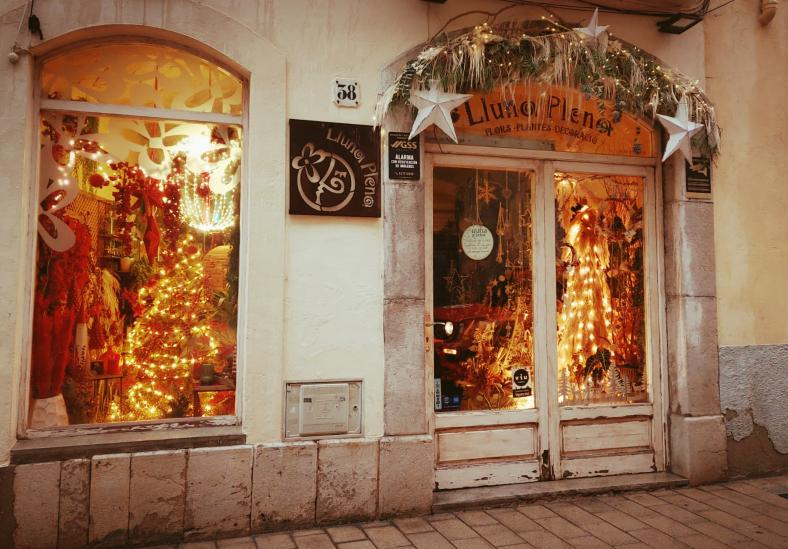

Carrer de l'Aigua, 38 · Vilanova i la Geltrú
Flors fresques, lligades a mà, al cor de Vilanova
Rams de temporada, decoració de boda i corones de dol. Cada ram es munta a mà amb flor fresca, i us diem què hi posem i què costarà abans de començar.
4.8 · 162 ressenyes a Google Llegir-les

Per a quina ocasió
Del ram de cada dia a la boda sencera
La mateixa botiga fa un ram petit i la decoració completa d'un convit. Trieu la vostra ocasió.
-
Bodes
Ram de núvia, botoners, arc, centres de taula i tota la flor de la cerimònia i del convit. Es dissenya mesos abans i es munta el mateix dia.
-
Dol i comiats
Corones, rams i centres per a vetlla i enterrament. És una feina urgent i l'atenem el mateix dia sempre que podem.
-
Aniversaris i celebracions
Rams d'aniversari, de felicitació i detalls per a qui fa anys. Digueu el color i el pressupost i ho lliguem.
-
Temporada i festes
Sant Jordi, Tots Sants, Nadal i Rams: la botiga canvia amb el calendari i amb la flor que hi ha al mercat.
-
Esdeveniments i empreses
Inauguracions, presentacions, restaurants i hotels que volen flor fresca cada setmana.
-
Consell i cura
Us expliquem com tallar la tija, quanta aigua posar i on no posar el gerro perquè us duri més.
La botiga
Una floristeria de barri que fa bodes
Lluna Plena Flors és una botiga petita on la flor es tria a mà cada setmana i les comandes es parlen una a una. Carmen i l'equip fan des del ram de dimarts fins a l'arc sencer d'una cerimònia.
Treballen amb flor de temporada i amb el que el mercat té millor aquell dia, per això el catàleg no és una llista tancada de productes: és una manera de treballar. Si teniu una idea, una foto o només un color al cap, us diem què es pot fer amb la flor d'aquesta setmana i quant costarà abans de començar.
Les bodes són bona part de la feina: rams de núvia, arcs, centres de taula i tota la decoració floral de la cerimònia i del convit. També fan rams de dol i corones, que és una feina on el temps mana i que atenen el mateix dia sempre que poden.
Què hi trobareu
No treballem amb un catàleg tancat: això és el que surt de la botiga gairebé cada setmana.
- Ram de temporada
- Lligat a mà amb la flor que hi ha aquell dia. Digueu el color o el pressupost i el muntem.
- Composició per a casa
- Per a un menjador, una consulta o un aparador. En cistella, en gerro o amb escorça.
- Centre de taula
- Per a un dinar, un convit o una celebració familiar. Es munta amb la flor del dia i el gerro que volgueu.
- Ram de núvia i botoners
- Es dissenya amb vosaltres mesos abans, a partir de fotos o d'una conversa sobre colors i estil.
- Corona i ram de dol
- Feina urgent, atesa el mateix dia quan és possible. Truqueu i ho resolem.
- Detall i regal petit
- Per a un aniversari, una visita a l'hospital o un gràcies, sense haver de fer un ram sencer.
- Valoració mitjana
- 4.8
- Ressenyes
- 162
- On som
- Vilanova i la Geltrú
- Especialitat
- Bodes
sobre 5 a Google
de clients reals
centre de la ciutat
decoració floral completa
“Tot el que vam imaginar i més. Ens va guiar sempre respectant el nostre gust.”
Rocío G., decoració de boda
Com encarregar
Tres passes i ho teniu
No hi ha formulari ni carret de la compra: es parla per telèfon o es ve a la botiga, i així el ram surt com el voleu.
-
Truqueu o passeu
Ens dieu l'ocasió, el color i el pressupost. Si teniu una foto de referència, millor.
-
Us confirmem flor i preu
Us diem què es pot fer amb la flor d'aquesta setmana i tanquem el preu abans de muntar res.
-
Recolliu o us ho portem
Ho podeu recollir a la botiga o us ho entreguem a Vilanova i als pobles del voltant.
Zona de repartiment
El repartiment segur és Vilanova i la Geltrú. Per als pobles del Garraf i el Penedès no prometem res per endavant: truqueu-nos i us diem si hi podem arribar aquell dia.
- Vilanova i la Geltrú — el nucli del repartiment
- La Geltrú
- Pobles del Garraf i el Penedès — pregunteu-nos
Entrega
Les comandes es fan per telèfon o a la botiga. Per a una entrega el mateix dia, truqueu com més aviat millor al matí: la flor s'ha de poder muntar i sortir.
Per encarregar, truqueu al 938 14 26 35Què diuen
Bodes fetes des de fora, i sortides bé
Bona part de les ressenyes són de parelles que van encarregar la flor des de l'estranger i la van veure per primer cop el dia de la boda. Aquestes són les seves paraules.
Van fer tota la decoració floral i els rams de la meva boda de l'abril de 2025. Ho vaig organitzar des dels Estats Units i, sense haver vist cap disseny abans, va sortir perfecte.
Em van fer la flor de la boda de l'abril de 2023. Ho vaig planificar des del Regne Unit i només vaig enviar fotos d'exemple. Vaig veure les flors per primer cop el dia de la boda i em vaig quedar sense paraules.
Ens van fer la flor d'una boda íntima i va quedar preciosa. Els vaig enviar fotos d'inspiració de Pinterest i van aconseguir exactament el que havia imaginat, potser fins i tot millor. Un equip molt amable i professional.
La Carmen es va encarregar de tota la decoració floral de la meva boda, amb un gust excel·lent i molt de respecte per la nostra personalitat. Es va desplaçar a diferents llocs per portar cada cosa on tocava i va estar atenta a cada comentari durant mesos.
Un lloc encantador i gent molt agradable. Els vaig confiar dues composicions florals i vaig sortir encantada.
Contacte
Truqueu i parlem del ram
És la manera més ràpida: al telèfon us diem què hi ha, què costa i quan ho podeu tenir. Si passeu per la botiga, millor encara.
Truqueu a la botiga 938 14 26 35Si no contestem és que estem muntant un ram: deixeu un missatge o torneu a trucar d'aquí a una estona.
El mapa de Google només es carrega si accepteu les galetes.